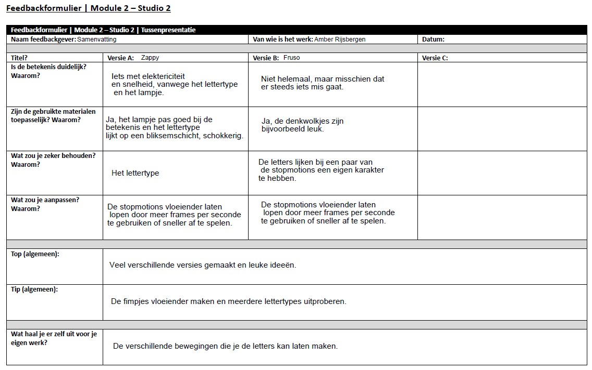
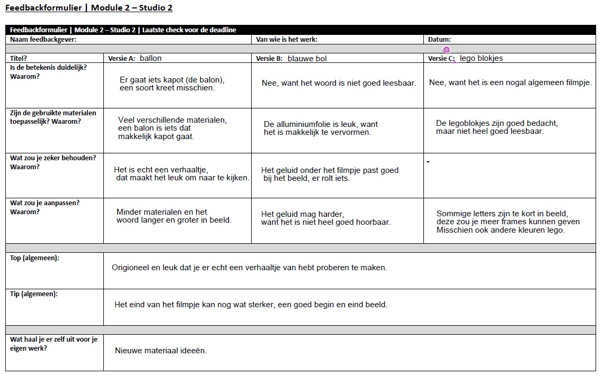
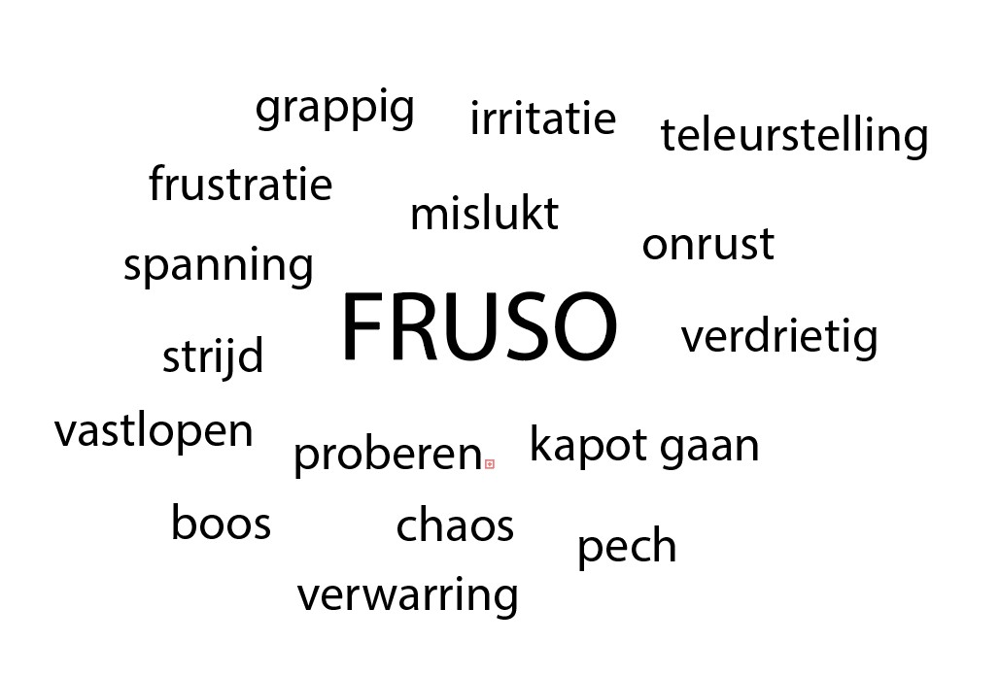
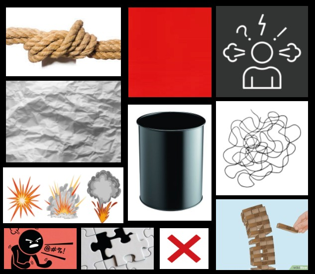
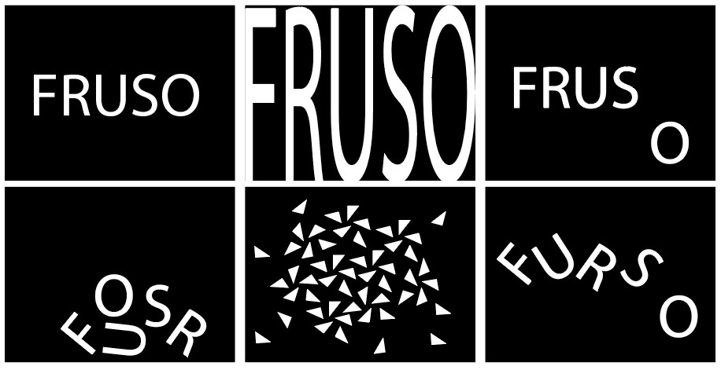
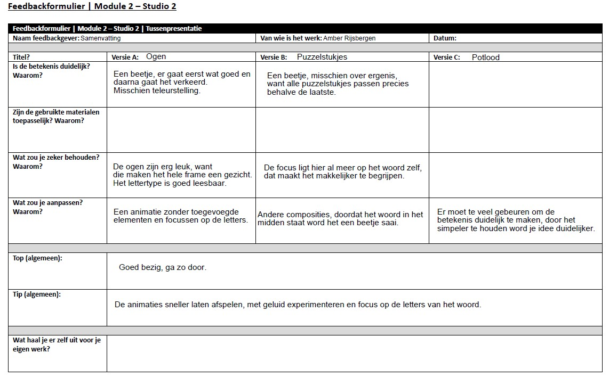

Experimenteren met typografie
De eerste typografische stopmotions gaan over het woord zappy, maar dit bleek al te bestaan, dus is gekozen om verder te gaan met een nieuw woord.
experiment zappy 2
experiment zappy 3
experiment zappy 4
experiment zappy 5
experiment fruso 1
experiment fruso 2
experiment fruso 3
experiment fruso 4
experiment fruso 5
experiment fruso 6
digitale versie
Feedback week 1
Dit is een samenvatting van de feedback van docenten en klasgenoten.
Experimenteren met texturen
experiment fruso 1
experiment fruso 2
experiment fruso 3
experiment fruso 4
experiment fruso 5
experiment fruso 6
experiment fruso 7
experiment fruso 8
experiment fruso 9
Feedback week 2
Dit is een samenvatting van de feedback van docenten en klasgenoten.
Experimenteren met woordbetekenis
FRUSO is een zelfbedacht woord dat staat voor frustratie: irritatie, spanning, onrust en vastlopen wanneer iets niet lukt of tegenvalt. Het kan ook worden gebruikt als uitroep: “Dit werkt niet, super FRUSO!”.
Mindmap
Moodboard
Voor- en eindbeelden
Experimenten (video)
experiment fruso 1
experiment fruso 2
experiment fruso 3
experiment fruso 4
experiment fruso 5
experiment fruso 6
experiment fruso 7
final version fruso animatie
Toelichting
Het valt F op dat de letter o op de verkeerde plek zit en het lukt hem niet om het woord compleet te maken, waardoor iedereen gefrustreerd raakt.
Feedback en Reflectie — week 3
Dit is een samenvatting van de feedback van docenten en klasgenoten.
Reflectie
Bij de eerste animaties merkte ik dat er veel extra elementen nodig waren om de betekenis van het woord duidelijk te maken, hierdoor ben ik meer gaan focussen op het woord zelf. Ik zou mij willen verdiepen in het programma after effects, om vloeinder te kunnen werken en betere resultaten te verkrijgen.